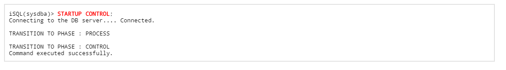
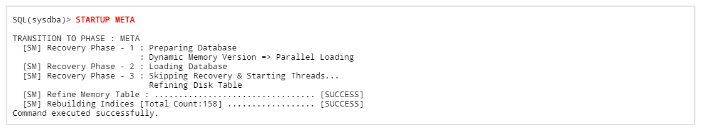

Altibase classifies the starting process into four stages.
This chapter describes the state of each step in which Altibase is starting up and the operations performed internally when transitioning to each step.
Additionally, by describing the tasks that the user can perform in each step, Altibase can be used efficiently.
Overview
When the DB startup process comes one step, the operations that can be done before the server is started and the operations that can be done after the server is started are strictly separated, so that the DB is started with a single command execution, so the DBA cannot perform a task distinct from the client.
This leads to restrictions on meta-migration and recovery functions.
In order to solve this problem, Altibase provides the DB starting process by classifying into 4 stages: PROCESS, CONTROL, META, and SERVICE.
At each stage, DBA can create DB, upgrade meta, and restore by selection.
When starting Altibase, to transition to each step, a command called "STARTUP" is used, which can be used after accessing iSQL with SYSDBA privileges.
When changing the state in each step, the transition to the next step is possible, but returning to the previous step is not supported.

In the figure above, the arrows indicate the process of state transition, and the colors indicate the state of each step.
The user can perform the functions provided in each step.
In the below, the operations performed internally by Altibase in each step and the operation that can be performed by the user are described.
PROCESS Stage
- PROCESS stage transition command
This is the first step when starting Altibase, and the stage can be transitioned with the "STARTUP PROCESS" command.
Accessing to the DB is not available at this state. The PROCESS stage is the stage in which each module (Storage Manager, Query Process, Communication Manager, etc.) is initialized, and the Altibase process is started for communication between the server and iSQL.
- Initial → Internal operation of the PROCESS stage
Altibase records the starting process in $ALTIBASE_HOME/trc/altibase_boot.log file, so the user can check what operation the DB internally performs in each step.
The following is the contents of altibase_boot.log recorded when starting in the PROCESS stage, and check what operations are performed with it. - Initialize each module to create or start Altibase
- Check and loading property file (01)
- Checking and loading the $ALTIBASE_HOME/conf/altibase.properities file
- Check License Validity (02)
- Initialize Process Signal System (04)
- Check ide Layer Initialization Result (05)
- Initialize Error Message Binary File (06)
- Initialize All Module Message Logging System (07)
- Logging Host System Up-Time (09)
- Do Daemonizing (10)
- Process Lock File Initialization (12)
- Acquire lock in $ALTIBASE_HOME/conf/altibase.properties file
- Avoid replication startup of Altibase process
- Lock Manager (14)
- Initialize the lock item used for concurrency control.
- Initialize server's main module
- Communication Manager (25)
- Storage Manager (26)
- Query Processor (27)
- Database Link Module (28)
- Start Altibase process and communicate with iSQL
- DB space is not accessible
- Only access to the fixed table
- Meta-related initialization or operation is impossible (DB is not accessible)
- CREATE/DROP DATABASE can be executed
- Check and loading property file (01)
- Operations can be done in the PROCESS stage
The tasks that users can perform in the PROCESS stage are as follows.- Creating a database using the CREATE DATABASE statement
- Change the property value
- Change the property value that can be changed with the ALTER command in ISQL
Performance view that users can view
ViewDescriptionV$ACCESS_LIST Access permission and restriction information of specific IP packets accessing Altibase V$ALLCOLUMN
Column information for configuring performance views V$DBA_2PC_PENDING
List of transaction branches in the in-doubt state in distributed transactions V$DIRECT_PATH_INSERT Statistical information related to direct-path upload V$INSTANCE Current Altibase multi-level operation information V$NLS_TERRITORY Performance view that stores the names of regions that can be set in the database or current session V$PROPERTY
Property information set in the Altibase V$TABLE Record and column information of all performance views
V$TIME_ZONE_NAMES List of zone names and abbreviations and UTC offset values that can be set in the TIME_ZONE property V$TRACELOG
Trace logging information V$TRANSACTION Transaction object information V$TRANSACTION_MGR Altibase transaction manager information V$TXSEGS Bound transaction segments information V$VERSION Altibase version information - Transition to higher levels such as the CONTROL stage
- Creating a database using the CREATE DATABASE statement
CONTROL Stage
CONTROL stage transition command
The CONTROL stage can transition state with the "STARTUP CONTROL" command after completing the tasks in the PROCESS stage.
- PROCESS step → Internal operation of CONTROL stage
The CONTROL stage is a stage in which each manager is initialized to the level where DB recovery is possible and the main managers (Buffer, Recovery, Disk, etc.) configuring the Storage Manager module are prepared.
The following is the contents of altibase_boot.log recorded when starting in the CONTROL stage, and check what operations are performed with it. - Initialize each module to the level where DB recovery is possible
- Communication Manager (01)
- Storage Manager (02)
- Query Processor (17)
- Prohibit change operation of DB using the DDL and DML
- Prepare the Storage Manager module to a level where recovery is possible (03)~(16)
- Prepare Buffer Manager, Disk Manager, Recovery Manager, etc.
- Operations can be done in the CONTROL stage
The operations that the user can perform in the CONTROL stage are as follows.- Perform Altibase recovery using the following DB recovery statement

- Initialize online log file
Since DB Restart Recovery is performed in the META stage, if incomplete recovery is performed in the CONTROL stage, online log files that are not reflected in the recovery may cause problems in the process of starting the DB.
Therefore, in the case of recovery, the online log file must be reset by using the following command before the transition to the META stage. - Change database mode

Retrieve performance view
The performance view can be retrieved in the PROCESS stage and the following performance view can be retrieved additionally. (Normal tables cannot be retrieved.)ViewDescriptionV$BACKUP_INFO Information on all incremental backups performed up to date V$DATAFILES
Information on data files used by the tablespace V$FILESTAT
I/O statistics information for each data file on the disk V$LFG Statistics value related to group commit V$LOCK_WAIT
Information on transaction lock wait status V$LOG Log anchor file information V$MEM_TABLESPACE_CHECKPOINT_PATHS When a checkpoint occurs for a specific tablespace (memory), the changed page (dirty page) is reflected.
The location of the database image file (directory path)V$MEM_TABLESPACE_STATUS_DESC Information on the contents of the status value of the memory tablespace V$OBSOLETE_BACKUP_INFO Information on backups that are no longer need to maintain
(As part of V$BACKUP_INFO, refer to V$BACKUP_INFO information for details)V$TABLESPACES
Tablespace information V$TSSEGS All TSS segments information
- Perform Altibase recovery using the following DB recovery statement
- Transition to a higher stage such as META stage.
META stage
- META stage transition command
The META stage can transition stage with the "STARTUP META" command after completing the tasks in the CONTROL stage.
 - CONTROL stage → Internal operation of META stage
The META stage is the completion step for the recovery process performed in the CONTROL stage, and checks the data files in the memory and disk to start the DB, and then performs Restart Recovery.
The following is the contents of altibase_boot.log recorded when starting in the META stage, and checks what operations are performed with it.
- Initialize of each module to the level that DB can be started by checking errors and restart
- Initialization of each module
- Communication Manager (01)
- Storage Manager (02)
- Query Processor (16)
- Database Link Module (18)
- Check media errors for data files (03) ~ (04)
- Check/Identify DB
- Check memory/disk tablespace data files and online log files to check if normal operation is possible.
- Restart recovery process for DBMS (07)
- If the DB is started after a normal shutdown, then restart recovery process is skipped. However, if the DB is started after an abnormal shutdown, Restart Recovery is performed.
- If the DB is started after a normal shutdown, then restart recovery process is skipped. However, if the DB is started after an abnormal shutdown, Restart Recovery is performed.
- Transaction Segment Entries Rebuild (09)
Rebuild Transaction Segment because TSS (Transaction Status Slot) is required when a transaction starts.
Since the Transaction Segment is included in the Undo Tablespace, reset the Undo Tablespace.
- Start the checkpoint thread
- Minimum SCN Rebuild (10)
- Create Minimum SCN to delete old version data due to MVCC
- Create Minimum SCN to delete old version data due to MVCC
- Garbage Collector
- Delete the old key of Index
- Delete Manager
- Delete the old record of the table
- Memory Index Rebuilding
- Since memory has a volatile feature, the index rebuilds when starting a new database after the DB is shutdown.
- Memory Table Refining
- Memory DB's free slot and free page information is run-time information that is not recorded on the disk, so it must be rebuilt during operation, and these operations are performed when refining the memory table.
- DB change operation using the DDL and DML is prohibited.
- Initialization of each module
- Initialize of each module to the level that DB can be started by checking errors and restart
- Operations can be done in the META stage
The operations that users can p[perform in the META stage are as follows.- All performance views can be retrieved.
- Transition to a higher stage such as the SERVICE stage is possible.
SERVICE Stage
- SERVICE stage transition command
The SERVICE stage can transition stage with the "STARTUP SERVICE or STARTUP" command after completing the tasks in the META stage.
- META stage → Internal operation of SERVICE stage
The SERVICE stage is the final stage in which the user can use the DB.
When it is started in the SERVICE stage, it becomes a state in which general database users can access it.
The following is the contents of altibase_boot.log recorded when it is started in the SERVICE stage, and checks what operations are performed with it.

- Initialize each module to provide normal DB service to users.
- Initialize the Communication Manager (01)
- Start the Listener
- Initialize each module for DB service (02) ~ (03), (05) ~ (08)
- Query Processor, Database Link Module, Security Module, etc.
- Check the Meta DB (04)
- Table, index, etc.
- Initialize replication module (09)
- Read the replication information
- Start the replication manager
- Start the replication Heart Beat Manager
- Send each stage message to iSQL and send a success message
- Initialize the Communication Manager (01)
- Operations can be done in the SERVICE stage
The operations that users can perform in the SERVICE stage are as follows.- iSQL connection
- Normal DB operation is possible.
{kind=link}
{kind=link}
{kind=link}
{kind=link}
{kind=link}
{kind=link}